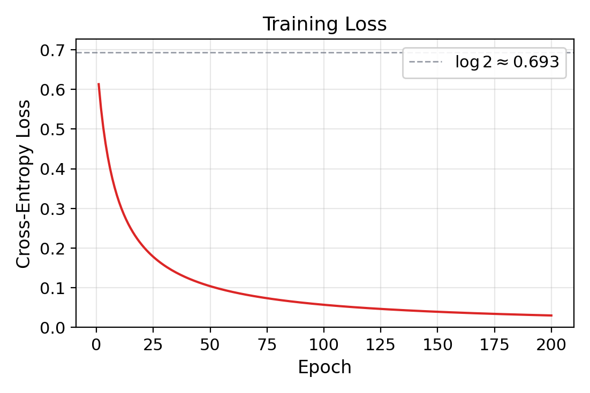
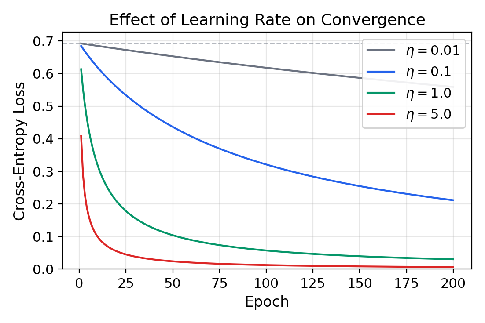
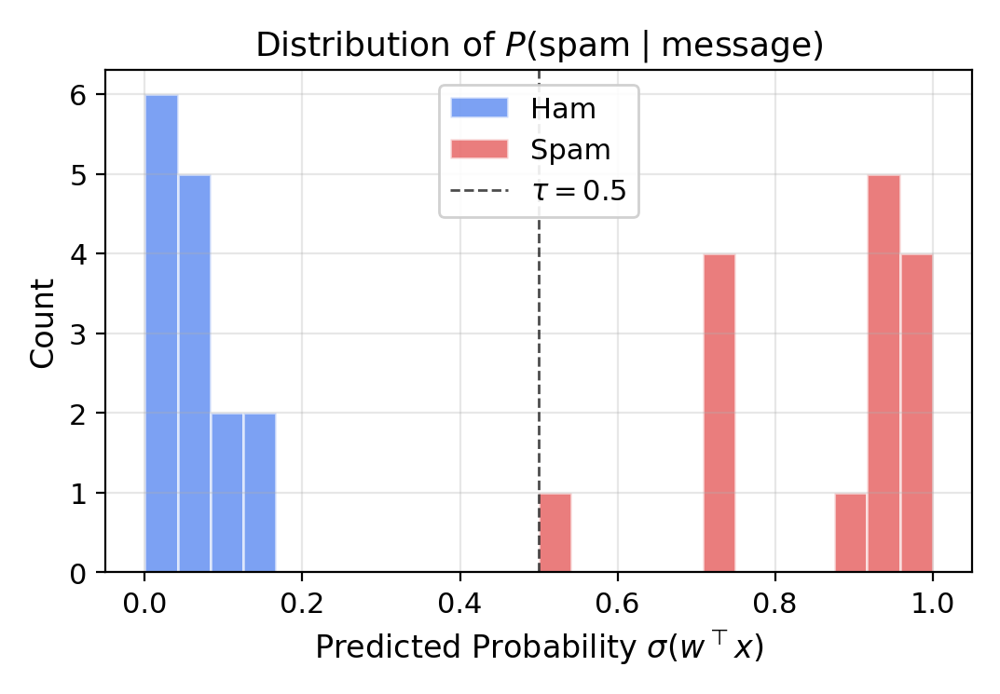
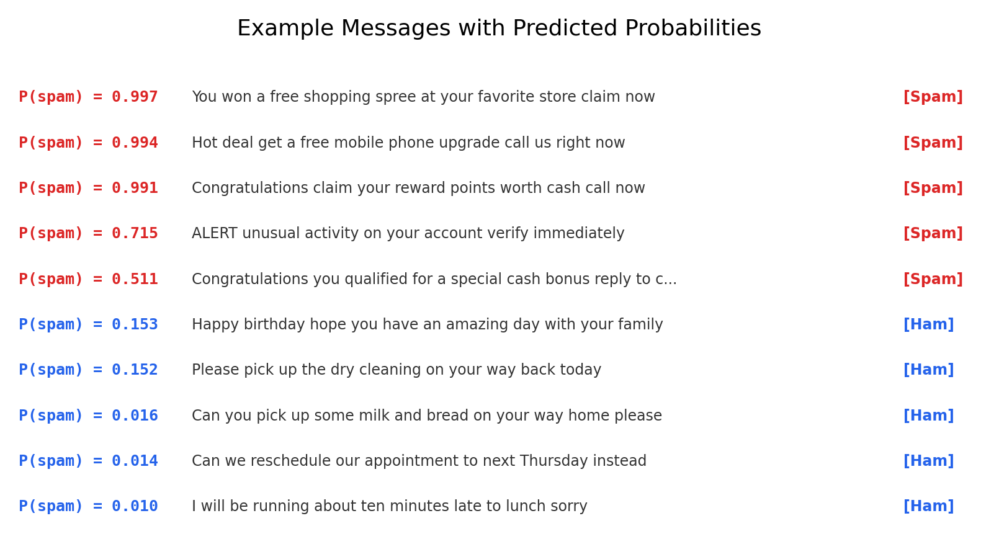
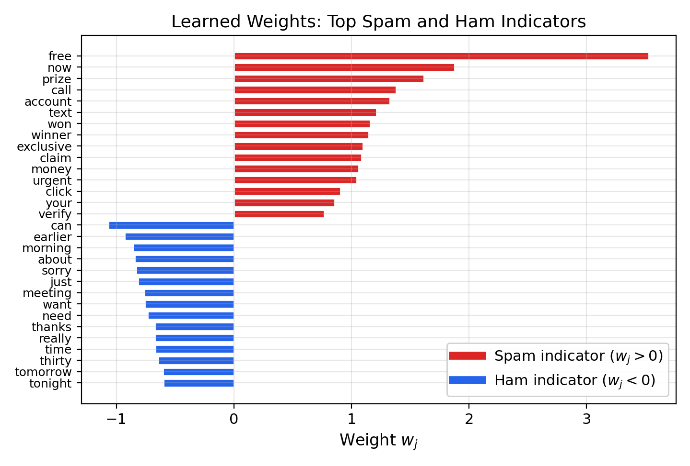
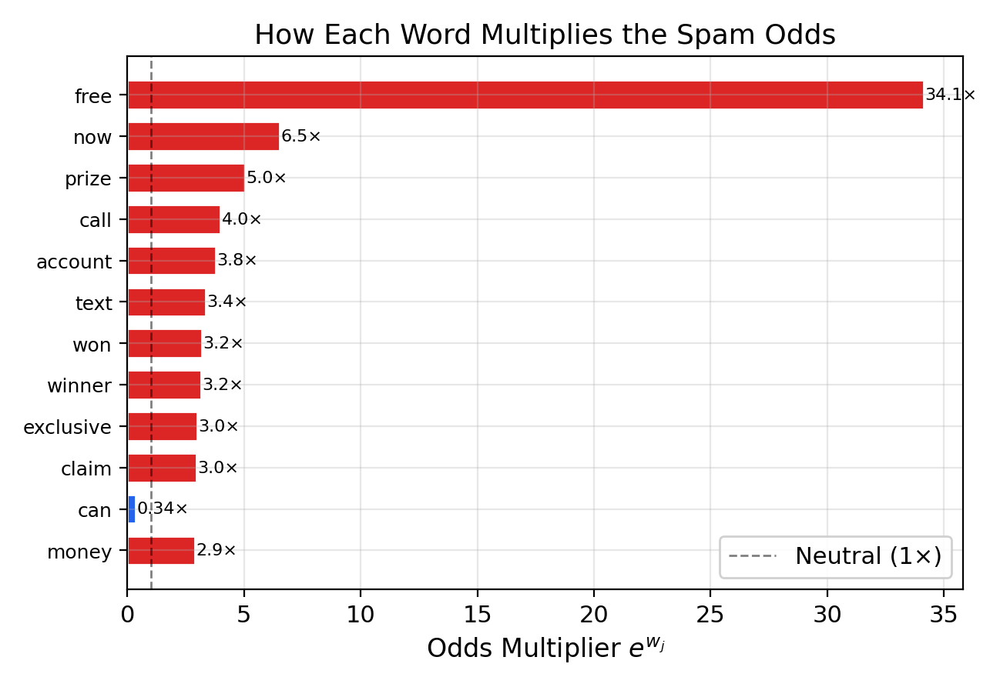
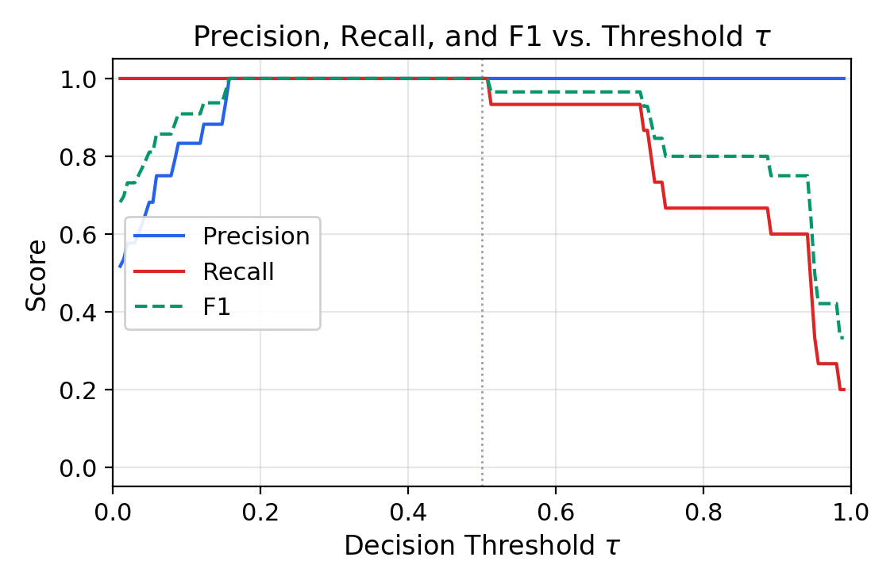

The previous article developed the sigmoid neuron as a probabilistic model: replacing the perceptron's discontinuous sign activation with the smooth sigmoid function $\sigma(z) = 1/(1 + e^{-z})$, interpreting the output as a Bernoulli probability, deriving the cross-entropy loss from maximum likelihood estimation, and computing the gradient in closed form. This article puts that theory to work. We train a sigmoid neuron to classify SMS text messages as spam or ham, building the entire pipeline from raw text to trained classifier.
Where the perceptron sentiment article operated on pre-computed GloVe embeddings—dense 50-dimensional vectors handed to the classifier as-is—this article constructs features from scratch. We start with raw text messages, tokenize and normalize them, build a vocabulary, and convert each message into a binary bag-of-words vector. The sigmoid neuron then learns which words are spam indicators and which are ham indicators, producing not a hard binary decision but a calibrated probability $P(\text{spam} \mid \text{message})$ for each input. The learned weights are directly interpretable: each weight $w_j$ tells us exactly how much the presence of word $j$ shifts the log-odds of spam, and the exponentiated weight $e^{w_j}$ gives the odds multiplier—the factor by which that word multiplies the spam odds.
We frame SMS spam detection as probabilistic binary classification. Given a text message $m$, we want to estimate:
$$ P(\text{spam} \mid m) = \sigma(w^\top x) $$where $x \in \{0, 1\}^V$ is a binary feature vector derived from the text, $w \in \R^{V+1}$ is a learned weight vector (with bias), and $\sigma$ is the sigmoid function. A message is classified as spam if $\sigma(w^\top x) > \tau$ for some threshold $\tau$ (typically 0.5).
This is the natural next step from the perceptron: instead of a hard decision $\sgn(w^\top x) \in \{-1, +1\}$, we get a probability $\sigma(w^\top x) \in (0, 1)$. The output 0.97 means "almost certainly spam"; the output 0.51 means "barely spam, possibly ham." This distinction matters: a spam filter that knows it is uncertain can defer to the user rather than silently deleting a legitimate message.
We use 120 SMS messages: 60 spam and 60 ham, split into 90 training messages (45 spam, 45 ham) and 30 test messages (15 spam, 15 ham).
The spam messages exhibit characteristic patterns familiar to anyone with a phone:
"Congratulations you have won a free prize call now to claim your reward"
"WINNER you have been selected for a cash prize call this number now"
"Free entry to win a brand new car text WIN to claim your prize today"
"Urgent your account has been compromised click here to verify now"
The ham messages are ordinary everyday communication:
"Hey are you coming to the meeting tomorrow morning at nine"
"Can you pick up some milk and bread on your way home please"
"Thanks for dinner last night it was really great seeing you"
"I will be running about ten minutes late to lunch sorry"
Even from these examples, the linguistic distinction is clear. Spam messages cluster around a small set of action-oriented trigger words—free, win, prize, call, claim, now, urgent—designed to create urgency and promise reward. Ham messages use the vocabulary of daily life—meeting, tomorrow, dinner, thanks, sorry—with no particular concentration on any single theme.
The perceptron sentiment article received its input as pre-computed GloVe vectors: each word was already a dense vector in $\R^{50}$. Here we build the feature representation from scratch, implementing the full NLP pipeline from raw text to numerical input.
We split each message into tokens using a simple regular expression that extracts sequences of alphanumeric characters, converting everything to lowercase:
import re
def tokenize(text):
return re.findall(r'[a-z0-9]+', text.lower())
For example, the message "WINNER you have been selected for a cash prize" becomes ["winner", "you", "have", "been", "selected", "for", "a", "cash", "prize"].
Stopwords are extremely common words (the, is, of, to, ...) that appear in virtually every message and carry little discriminative information. We remove a small set of 36 stopwords:
STOPWORDS = {"a", "an", "the", "is", "it", "of", "to", "in", "and", "or",
"for", "on", "at", "by", "with", "that", "this", ...}
From the training messages only, we count the frequency of each non-stopword token and keep those appearing at least twice. This produces a vocabulary of 119 words. The frequency threshold eliminates words that appear in only one message—these are unreliable indicators and would lead to overfitting.
def build_vocabulary(messages, min_freq=2):
freq = {}
for msg in messages:
for token in tokenize(msg):
if token not in STOPWORDS:
freq[token] = freq.get(token, 0) + 1
vocab = sorted([w for w, c in freq.items() if c >= min_freq])
return vocab
Each message is converted to a binary vector $x \in \{0, 1\}^{120}$: one component per vocabulary word (1 if the word appears in the message, 0 otherwise), plus a bias term of 1 appended at the end. We discard word order and frequency—only presence matters.
def featurize(messages, vocab):
word_to_idx = {w: i for i, w in enumerate(vocab)}
X = np.zeros((len(messages), len(vocab) + 1)) # +1 for bias
for i, msg in enumerate(messages):
tokens = set(tokenize(msg))
for token in tokens:
if token in word_to_idx:
X[i, word_to_idx[token]] = 1.0
X[i, -1] = 1.0 # bias term
return X
Consider the message: "Congratulations you have won a free prize call now to claim your reward". After tokenization and lowercasing: ["congratulations", "you", "have", "won", "a", "free", "prize", "call", "now", "to", "claim", "your", "reward"]. After stopword removal: ["congratulations", "you", "have", "won", "free", "prize", "call", "now", "claim", "your", "reward"]. The binary feature vector has 1s at the vocabulary positions for congratulations, won, free, prize, call, now, claim, your, reward (and any other vocabulary words present), and 0s everywhere else, with a trailing 1 for the bias.
The resulting feature matrix has shape $90 \times 120$ for training (90 messages, 119 vocabulary features + 1 bias).
With features in hand, we train the sigmoid neuron using batch gradient descent exactly as derived in the theory article. The code maps directly to the mathematics:
def sigmoid(z):
z = np.clip(z, -500, 500)
return 1.0 / (1.0 + np.exp(-z))
def train_sigmoid(X, y, lr=1.0, epochs=200):
m, d = X.shape
w = np.zeros(d)
for epoch in range(epochs):
y_hat = sigmoid(X @ w) # predictions
gradient = X.T @ (y_hat - y) / m # gradient
w = w - lr * gradient # update
return w
Each line corresponds to a step in the derivation:
y_hat = sigmoid(X @ w) computes $\hat{y}^{(i)} = \sigma(w^\top x^{(i)})$ for all training examples simultaneouslygradient = X.T @ (y_hat - y) / m computes $\nabla_w \mathcal{L} = \frac{1}{m} X^\top (\hat{y} - y)$, the gradient of the cross-entropy lossw = w - lr * gradient performs the update $w \leftarrow w - \eta \nabla_w \mathcal{L}$The np.clip in the sigmoid function prevents numerical overflow: without it, very large negative values of $z$ would produce exp(500) $\approx 10^{217}$, which exceeds floating-point range.
We initialize the weights at $w = 0$, which means the initial prediction for every message is $\sigma(0) = 0.5$—maximum uncertainty. Training then moves the weights to separate spam from ham.
The cross-entropy loss is:
$$ \mathcal{L}(w) = -\frac{1}{m} \sum_{i=1}^{m} \left[ y^{(i)} \log \hat{y}^{(i)} + (1 - y^{(i)}) \log(1 - \hat{y}^{(i)}) \right] $$At initialization ($w = 0$), every prediction is $\hat{y} = 0.5$, so the initial loss is:
$$ \mathcal{L}(0) = -\frac{1}{m} \sum_{i=1}^{m} \log(0.5) = \log 2 \approx 0.693 $$This is the loss of a model that assigns equal probability to spam and ham for every message—a model that knows nothing.

The loss curve shows smooth, monotonic decrease—in sharp contrast to the perceptron's discrete mistake count that drops in integer steps. The initial loss of 0.613 is slightly below $\log 2$ because the first gradient step has already been taken before the first loss is recorded. By epoch 50, the loss has dropped below 0.1; by epoch 200, it reaches 0.030.
The learning rate $\eta$ controls the step size of gradient descent. Too small, and convergence is slow; too large, and the updates overshoot.

With $\eta = 0.01$, the loss remains above 0.58 after 200 epochs—the model has barely learned anything. With $\eta = 0.1$, convergence is steady but slow. With $\eta = 1.0$ (our default), the loss drops efficiently to 0.030. With $\eta = 5.0$, convergence is even faster on this problem, but aggressive learning rates risk instability on harder datasets.
After training, the sigmoid neuron assigns a probability $P(\text{spam} \mid m) = \sigma(w^\top x)$ to each message. This is the core advantage over the perceptron: instead of a binary yes/no, we get a calibrated confidence score.

The histogram reveals clean separation: all 15 ham messages receive probabilities below 0.2, and all 15 spam messages receive probabilities above 0.5. The model achieves 100% test accuracy (30/30).
Individual predictions illustrate the range of confidence:

The most confident spam predictions ($P > 0.99$) are messages saturated with trigger words: "You won a free shopping spree at your favorite store claim now." The least confident spam prediction ($P = 0.511$) is "Congratulations you qualified for a special cash bonus reply to claim"—still correctly classified, but the model is much less certain. On the ham side, messages like "I will be running about ten minutes late to lunch sorry" receive $P(\text{spam}) = 0.010$—the model is 99% confident this is not spam.
The sigmoid neuron's weight vector $w$ has a direct interpretation. Recall from the theory article that the log-odds of the positive class are:
$$ \log \frac{P(\text{spam} \mid x)}{P(\text{ham} \mid x)} = w^\top x = \sum_{j=1}^{V} w_j x_j + b $$Since our features are binary ($x_j \in \{0, 1\}$), each weight $w_j$ is the additive change to the log-odds when word $j$ is present. Equivalently, exponentiating gives the odds multiplier: $e^{w_j}$ is the factor by which the presence of word $j$ multiplies the odds of spam.

The weight chart tells a clear story. The strongest spam indicator is "free" with $w = +3.53$. Next come the urgency and reward vocabulary: "now" ($+1.88$), "prize" ($+1.62$), "call" ($+1.38$), "account" ($+1.33$). On the ham side, "can" ($-1.07$), "earlier" ($-0.93$), and "morning" ($-0.86$) are the strongest indicators—words from the vocabulary of everyday coordination.
The odds multiplier $e^{w_j}$ makes the interpretation concrete:

The word "free" has an odds multiplier of $e^{3.53} \approx 34\times$. This means: holding all other words fixed, adding "free" to a message multiplies the odds of spam by a factor of 34. If a message without "free" had even odds (50/50 spam/ham), adding "free" shifts the odds to 34:1 in favor of spam, corresponding to $P(\text{spam}) = 34/35 \approx 0.97$.
The bias term $b = -2.04$ encodes the model's prior: with no words present (an empty feature vector), the log-odds are $-2.04$, giving $\sigma(-2.04) \approx 0.12$. The model starts skeptical that any message is spam, and only moves toward spam when spam-indicator words accumulate.
The default decision rule classifies a message as spam when $P(\text{spam} \mid m) > 0.5$. But the probability output lets us choose any threshold $\tau$, trading off between two types of errors:
Raising $\tau$ reduces false positives (higher precision) but increases false negatives (lower recall). Lowering $\tau$ catches more spam but risks filtering legitimate messages.

On our test set, a wide range of thresholds ($\tau \in [0.15, 0.50]$) achieve perfect precision and recall. This reflects the clean separation in the probability histogram—no test messages fall near the boundary. In practice, on noisier data, the precision-recall tradeoff is central: an email provider might choose $\tau = 0.9$ (very high confidence before filtering) to avoid ever blocking a legitimate message, accepting that some spam will get through.
The ability to tune this tradeoff is impossible with the perceptron. The perceptron produces $\sgn(w^\top x) \in \{-1, +1\}$—a hard decision with no knob to adjust. The sigmoid neuron's probabilistic output enables application-specific deployment.
The bag-of-words sigmoid neuron achieves perfect accuracy on our dataset, but several fundamental limitations should be noted:
Bag-of-words loses word order. The feature vector treats "free prize" and "prize free" identically, and cannot distinguish "not spam" from "spam not." Any meaning that depends on word sequence is invisible to this model.
Small vocabulary. Our 119-word vocabulary, built from 90 training messages, captures only the most common patterns. Real spam evolves constantly—novel phishing templates, obfuscated spellings ("fr33," "w1n"), and messages crafted to avoid known trigger words would evade this classifier.
No feature interactions. The log-odds model is additive: $\log \text{odds} = \sum w_j x_j + b$. This means the model cannot learn that "free" is spammy only when combined with "call"—each word's contribution is independent of what other words appear. Nonlinear models (neural networks with hidden layers) can capture such interactions.
Adversarial vulnerability. A spammer who knows the model's weights could craft messages that avoid high-weight spam words while including high-weight ham words—for example, "Can you please check your morning schedule" followed by a phishing link. The bag-of-words model would assign low spam probability to such a message.
Binary features discard frequency. We record whether a word appears, not how many times. A message that repeats "free" ten times gets the same feature vector as one that mentions it once. Count-based or TF-IDF features could capture this signal.